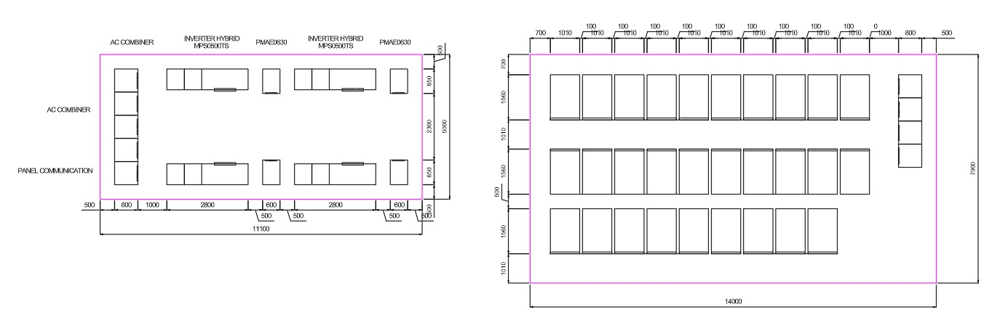
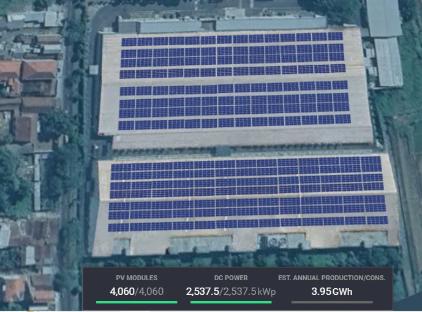
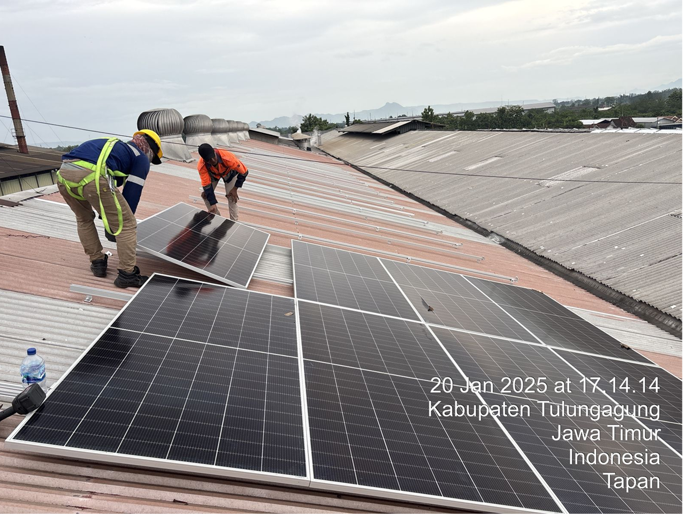
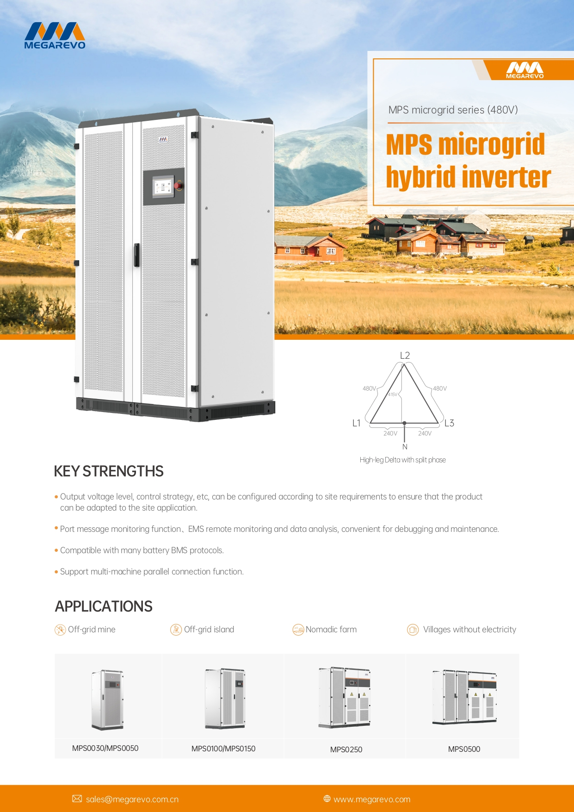
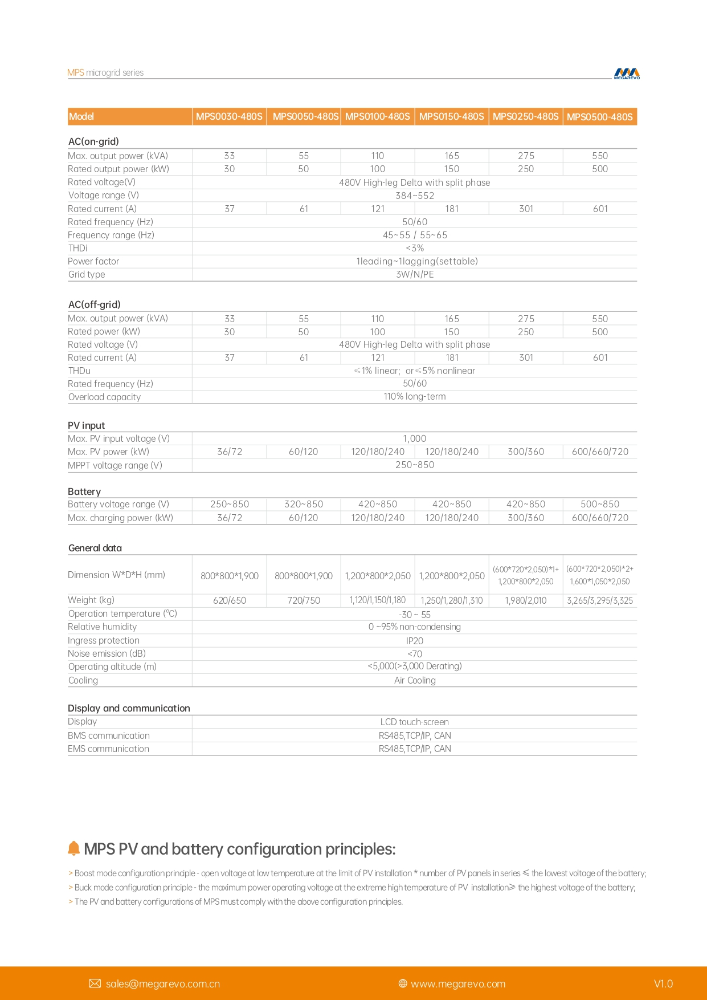
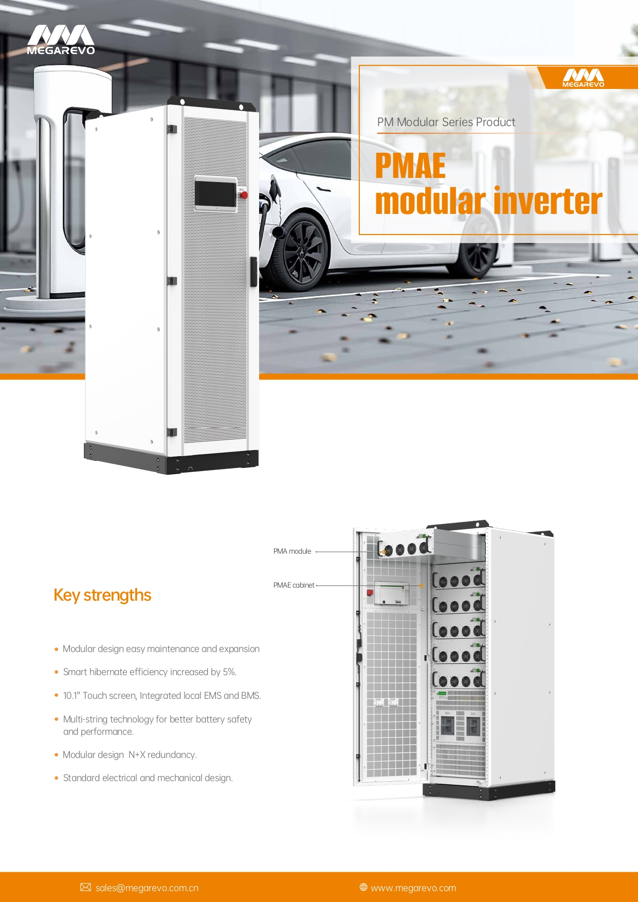
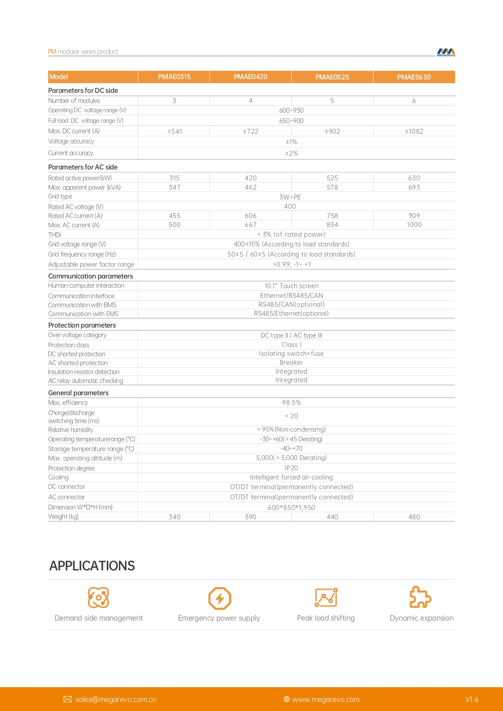
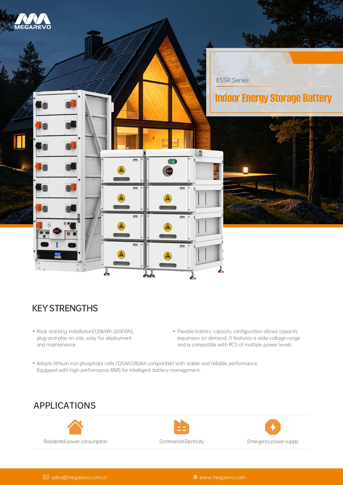
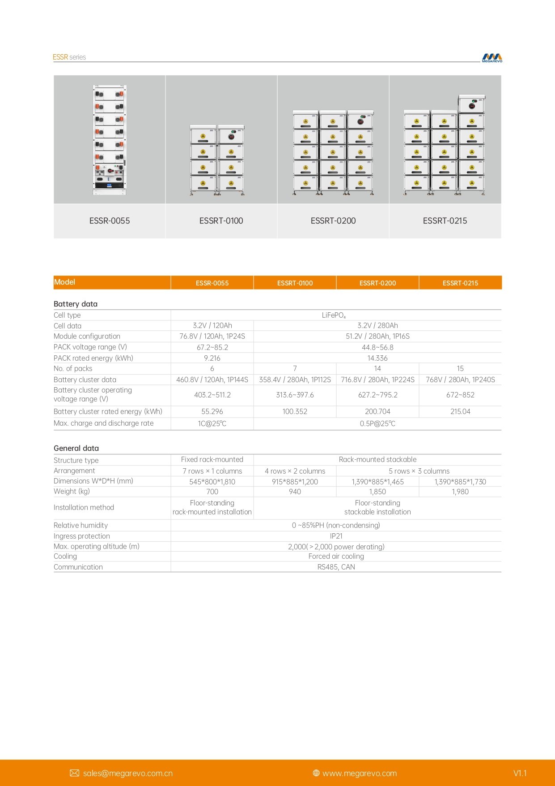

Listrik padam,
produksi tetap jalan.
Sistem penyimpanan energi (Battery Energy Storage System) untuk pabrik pemintalan PT Sari Warna Asli — SP1 Kudus 5 & SP2 Jekulo 3.
Dua pabrik, dua sambungan PLN tegangan menengah
Listrik adalah bahan baku utama pemintalan. Tagihan bulan Mei 2026 kedua pabrik mencapai ±Rp 3 miliar.
Kudus 5 · ID 520010149480
Jekulo 3 · ID 520012592369
kali listrik padam dalam 18 bulan
Januari 2025 – Juni 2026. Gangguan paling sering justru terjadi di jam produksi siang–sore: pukul 13:00, 14:00 dan 17:00.
Padam 1 menit = mesin berhenti 30 menit
Kerugian terbesar bukan lamanya listrik padam, melainkan waktu menghidupkan kembali ratusan spindel.
PLN padam / kedip
Bahkan gangguan sesaat sudah cukup membuat drive mesin trip.
Mesin berhenti mendadak
Ring frame & winding berhenti tidak serempak — tegangan benang tidak terkendali.
Benang putus massal
Ratusan ujung benang harus disambung ulang secara manual.
Restart ±30 menit
Produksi baru normal kembali setelah ±30 menit per kejadian.
Baterai sebagai "bendungan listrik" pabrik
Fokus pada mesin yang paling rugi bila berhenti
Baterai tidak perlu menanggung seluruh pabrik. Yang dilindungi: ring frame, winding, dan kompresor.
SP1 · Kudus 5 kW
SP2 · Jekulo 3 kW
Modular — tiap blok bekerja paralel
Satu EMS mengatur semua blok: kapan mengisi, kapan membantu suplai, dan kapan mengambil alih saat PLN padam.
Jalur energi, dari PLN sampai mesin kritis
gangguan tidak lagi terasa
Setiap titik = satu kejadian padam (ukuran = durasi). Hijau tertutup penuh oleh baterai; oranye lebih dari ±2 jam — baterai memberi waktu untuk shutdown terkendali.
SP1 109/115 · SP2 74/80
SP1 54,5 jam · SP2 37 jam · rata-rata ±61 jam/tahun
Isi saat murah, bantu saat mahal, siaga setiap saat
EMS menjaga cadangan minimum agar baterai selalu siap — penting karena puncak gangguan (17:00) bertepatan dengan awal jam mahal WBP.
Dua ruang: inverter & baterai

Atap pabrik bisa menghasilkan ±4 GWh listrik per tahun

Simulasi tata letak modul · klik untuk memperbesarPV masuk langsung ke input PV inverter MPS — siang hari menyuplai mesin, kelebihannya mengisi baterai, sehingga energi surya terpakai 100% di pabrik.
Lebih dari sekadar cadangan listrik
Produksi tidak terhenti
±94% gangguan historis tertutup penuh; mesin kritis tetap berputar.
±61 jam/tahun kembali produktif
Waktu restart mesin yang selama ini hilang setiap kali PLN padam.
Kualitas benang stabil
Tanpa putus massal & sambungan darurat — lebih sedikit waste dan cacat.
Tagihan WBP berkurang
Indikatif ±Rp 0,5 miliar/tahun untuk kedua pabrik dari pergeseran beban jam 17–22.
Siap PLTS atap
Inverter hybrid sudah memiliki input PV — energi surya bisa disimpan dan dipakai 100%.
Monitoring real-time
Dashboard energi, status baterai dan riwayat gangguan bisa dipantau dari mana saja.
Satu tanggung jawab, dari survei sampai perawatan
PT Hexa Multi Energi
- EPC energi bersih — Surabaya
- Desain, pengadaan, instalasi & commissioning
- Integrasi dengan panel & mesin existing
- Layanan O&M dan monitoring
Mitra teknologi
- Produsen inverter penyimpanan energi — Shenzhen, sejak 2018
- Lini C&I, microgrid & PCS modular
- Sertifikasi CE, TÜV, UL
- Terpasang di 30+ negara

Proyek HME · Tulungagung, 2025Dari presentasi awal ke penawaran final
- Data profil beban 15 menit (meter AMR PLN) kedua pabrik
- Konfirmasi daftar mesin kritis & panel distribusinya
- Nilai kerugian produksi per jam downtime
- Data genset existing (bila ada)
- Akses survei lokasi calon ruang inverter & baterai
Presentasi awalHari ini — konsep & kebutuhan
Survei teknisPengukuran beban, ruang, panel
Desain detail & penawaranSizing final, layout, harga, ROI
Keputusan & kontrakJadwal pelaksanaan EPC
Terima kasih
MPS0500TS — inverter hybrid microgrid

Jantung sistem backup. Menghubungkan baterai, PLTS (opsional) dan PLN, lalu menyuplai panel beban kritis lewat load port — termasuk saat PLN padam (mode off-grid).
| Daya nominal (on/off-grid) | 500 kW |
| Daya maks | 550 kVA |
| Rentang tegangan baterai | 500–850 V |
| Daya isi baterai maks | 600 / 660 / 720 kW |
| Input PV maks | 600 / 660 / 720 kW · MPPT 250–850 V |
| Kualitas tegangan off-grid (THDu) | ≤1% linier · ≤5% non-linier |
| THDi | < 3% |
| Kemampuan beban lebih | 110% kontinu |
| Paralel multi-unit | Ya (CAN) |
| Proteksi · pendinginan | IP20 · udara |
| Dimensi · berat | 2×(600×720×2.050) + 1.600×1.050×2.050 mm · ±3,3 t |
| Komunikasi | RS485, TCP/IP, CAN |

PMAE0630 — PCS modular

Konverter dua arah di bus 400 V untuk manajemen beban: mengisi baterai di jam LWBP dan melepas energi di jam WBP (peak shaving). Modular — bila satu modul gangguan, sistem tetap jalan.
| Daya nominal | 630 kW |
| Daya semu maks | 693 kVA |
| Jumlah modul daya | 6 × 105 kW (redundansi N+X) |
| Tegangan AC · sistem | 400 V · 3W+PE |
| Arus AC nominal / maks | 909 A / 1.000 A |
| Rentang DC operasi | 600–950 V (beban penuh 650–900 V) |
| Efisiensi maks | 98,5% |
| Faktor daya | >0,99 · dapat diatur −1 s/d +1 |
| Waktu switching charge ↔ discharge | < 20 ms |
| THDi | < 3% |
| Proteksi · pendinginan | IP20 · udara paksa cerdas |
| Dimensi · berat | 600 × 850 × 1.950 mm · 480 kg |

ESSR / ESSRT — rak baterai LiFePO₄ indoor

Tempat menyimpan energi. Sel lithium iron phosphate (LFP) — kimia baterai paling aman & tahan lama untuk industri — dengan BMS yang memantau setiap sel.
| Kimia sel | LiFePO₄ · 3,2 V / 280 Ah |
| Modul (pack) | 51,2 V · 14,336 kWh |
| ESSRT-0100 | 7 pack · 358,4 V · 100,4 kWh |
| ESSRT-0200 | 14 pack · 716,8 V · 200,7 kWh |
| ESSRT-0215 | 15 pack · 768 V · 215,0 kWh |
| Rentang tegangan cluster 0215 | 672–852 V |
| Laju charge/discharge maks | 0,5P @ 25 °C |
| Konstruksi | Rak stackable, berdiri di lantai |
| Dimensi · berat (0215) | 1.390 × 885 × 1.730 mm · 1.980 kg |
| Proteksi · pendinginan | IP21 · udara paksa |
| Kelembapan | 0–85% RH (non-kondensasi) |
| Komunikasi BMS | RS485, CAN |
